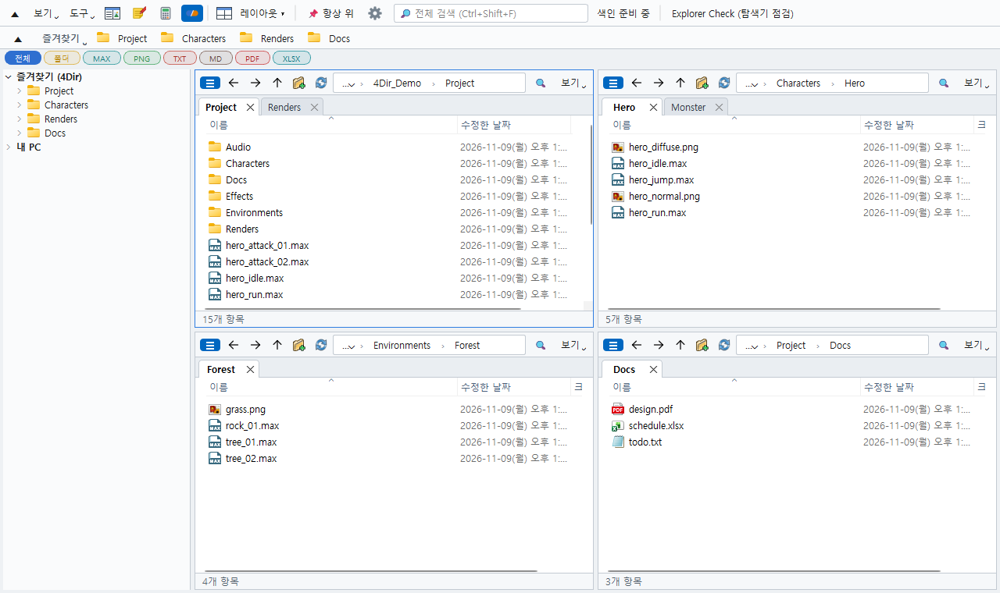
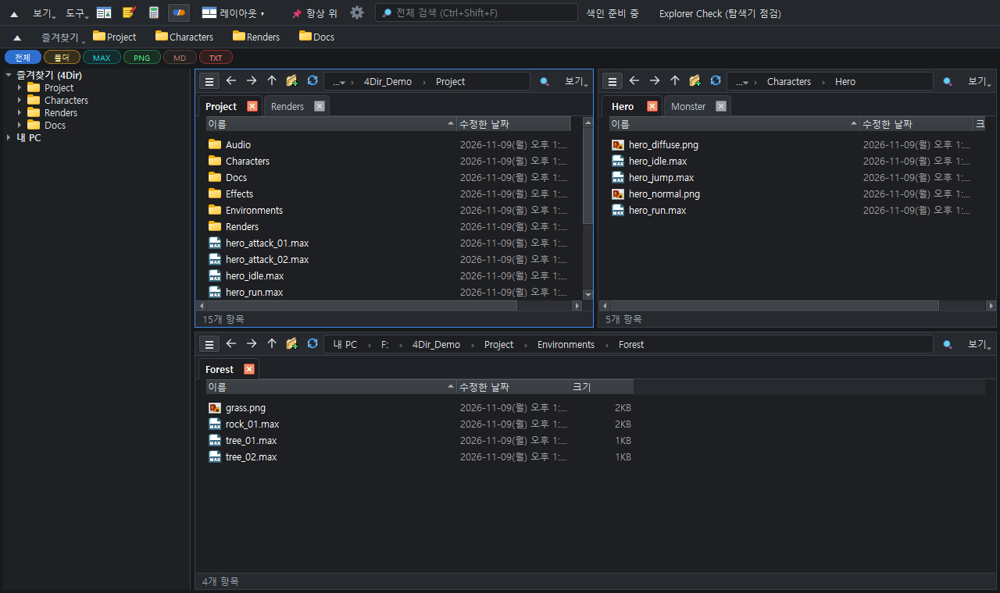

윈도우 탐색기보다 빠른 멀티 탐색기!!
윈도우 10/11용 무료 파일 관리자. 설치 없이 압축만 풀고 실행.
⬇ 4Dir v0.9.138 받기⊞ Microsoft Store 에서 받기
윈도우 10/11 64비트 · 90 MB · 2026-11-17 · 무료 · 🌐 언어 지원 16
백신이나 회사 PC 가 zip 을 막으면 마이크로소프트가 서명한 스토어판을 받으세요 (Win+E 연결은 스토어판에서 안 됨).
⚠ 일부 백신(Microsoft Defender, HP Wolf Security 등)이 zip 안의 4Dir.exe 를 악성코드로 잘못 잡습니다. 오탐입니다 — 4Dir.exe 는 앱을 띄우기만 하는 18KB 실행기이며(소스) 백신 회사에 신고했습니다. 막히면 스토어판을 쓰세요.
⭐ 4Dir 가 마음에 드셨다면 깃허브에서 별을 눌러 주세요.
⭐ 깃허브에서 별 주기4Dir 후원하기
4Dir 는 무료이고 광고가 없습니다. 시간을 아껴 드렸다면 작은 후원이 다음 업데이트의 힘이 됩니다.
v0.9.138 에서 바뀐 점
- 특성 열 (A·R·H·S, 탐색기와 같게) — 열 제목 우클릭으로 켜기.
- Insert 로 지금 줄을 ▶ 표시해 고르고 다음 줄로 (다시 누르면 풀림).
- 삭제할 때 휴지통·영구 삭제·취소 묻기 옵션.
- 팀뷰어·아웃룩에서 복사한 파일 붙여넣기.
- 설정 ▸ 정보에서 바로 메일 보내기 · CPU·GPU 사용량 더블클릭 = 작업 관리자.

기능
최대 20칸
1·2·3·4·6칸을 버튼 하나로, 또는 가로 5 × 세로 4까지 원하는 대로. 칸마다 탭이 따로 있습니다.
PC를 무겁게 하지 않음
무거운 윈도우 탐색기 화면을 쓰지 않고 폴더를 직접 읽습니다. 쉬고 있을 때는 아무것도 하지 않아 3ds Max·게임 같은 무거운 프로그램 옆에 켜 둬도 안전합니다.
바로 찾는 검색
입력하는 즉시 드라이브의 모든 파일 이름을 찾습니다. 자체 목록이 실시간으로 갱신되고 관리자 권한이 필요 없습니다.
SVN 상태 한눈에
.svn 을 직접 읽어 수정·추가·충돌 표시. 안쪽이 바뀐 폴더는 빨갛게. Git·Perforce 는 윈도우 겹침 아이콘으로.
탐색기와 같은 손맛
같은 단축키, 윈도우 우클릭 메뉴 그대로, 탐색기·다른 프로그램과 끌어다 놓기. webp 그림은 우클릭 한 번으로 PNG·JPG로 저장.
휴대용·개인정보 보호
설정은 4Dir 폴더 안에만. 밝게/어둡게, 16개 언어, 이름 일괄 변경, 창 구성 복구, 탐색기 점검 기본 포함.

설치 방법
- 위 버튼(또는 깃허브 Releases)에서 zip 을 받습니다. 깃허브의 초록색 'Code → Download ZIP' 은 소스 코드만 있어 실행되지 않습니다.
- 압축 파일 우클릭 → 속성 → 차단 해제 체크 → 확인. (안 하면 실행할 때마다 보안 경고가 뜹니다)
- 아무 곳에나 압축을 풀고 4Dir.exe 를 더블클릭. (막히면 4Dir.vbs)
윈도우 보안(SmartScreen) 창이 뜨면 추가 정보 → 실행.
정품 확인 (선택)
명령 프롬프트에서 certutil -hashfile 4Dir_v0.9.138.zip SHA256 결과가 아래와 같으면 정품입니다:
fccde12b0e70d3fb224249fac793283006f4760ac4f362d6e3ee2b3d426261b5
자주 묻는 질문
정말 무료인가요?
네. 무료 오픈소스(GPL-3.0)입니다. 광고·회원가입·체험 기간 없습니다.
회사에서 써도 되나요?
네. GPL-3.0 무료 소프트웨어라 회사에서도 비용·등록 없이 쓸 수 있습니다. 설치 없이 실행하는 프로그램이니, 회사 보안 규정에서 휴대용 프로그램을 허용하는지만 확인해 주세요.
탐색기보다 정말 빠른가요?
파일 1천 개 폴더를 새 창으로 열면 4Dir 0.4초, 탐색기 약 2초 걸렸습니다. 창을 하나 더 열 때 늘어나는 메모리는 4Dir 약 10MB, 탐색기 약 130MB였습니다. 같은 PC(윈도우 11, SSD)에서 5번씩 잰 값입니다. 파일이 수만 개인 폴더에서는 차이가 줄어듭니다.
정보를 보내나요?
개인 정보는 보내지 않습니다. 하루 한 번 새 버전이 있는지만 확인합니다(도구 메뉴에서 끌 수 있음).
문제가 생기면?
도구 → 문제 보고용 로그 저장 → 알림의 '메일로 보내기'를 누르거나, 생긴 zip 을 support@4dir.net 으로 보내 주세요. 깃허브 사용자는 문제 보고(Issue)도 됩니다.